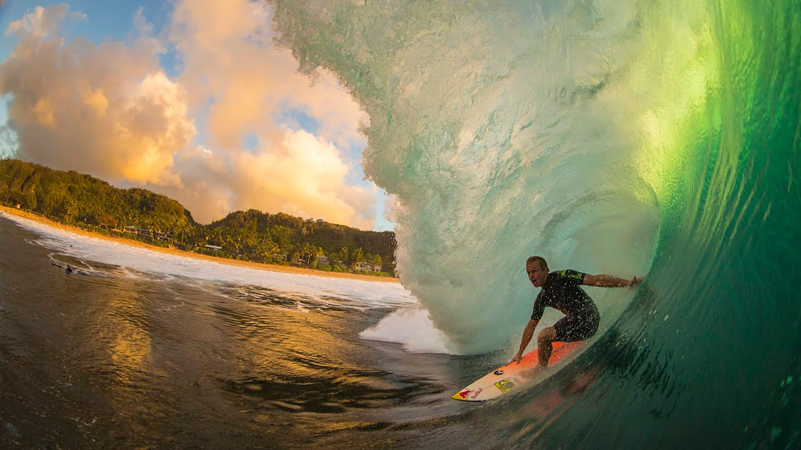
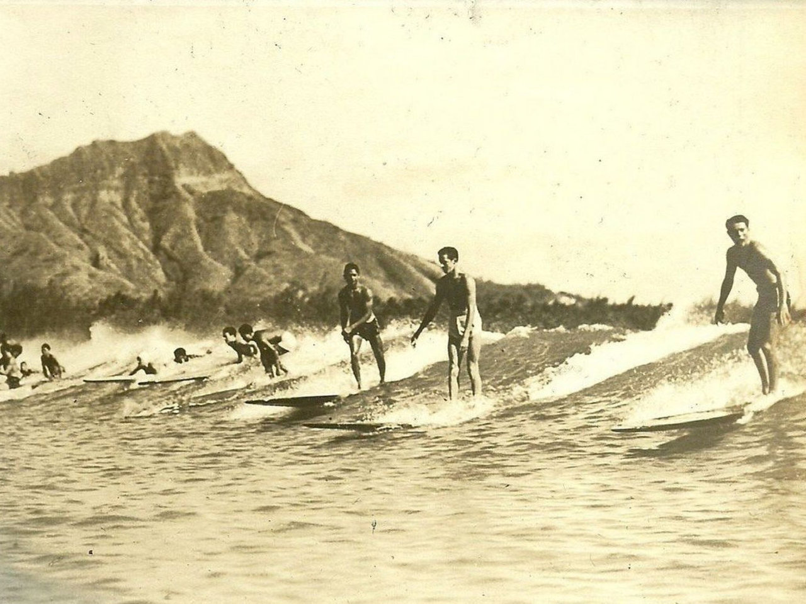

Surfing is the sport of riding waves in an upright or prone position. Surfers catch ocean, river, or man-made waves, and glide across the surface of the water until the wave breaks and loses its energy.
In the ocean, wave riders stand up on surfboards and navigate the water - nearly parallel to the beach - toward the shore. There are four types of surfing waves: spilling waves, plunging waves, surging waves, and collapsing waves. The ultimate goal of surfing is to ride and progress on the unbroken part of the wave using a surfboard. Nevertheless, beginners can learn to surf in the whitewater part of the wave. Many surf historians and enthusiasts believe that the essence of surfing is in bodysurfing, the art of gliding over the waves using only the body as a planing surface.

Surfing’s roots lie in premodern Hawaii and Polynesia, where the sport was practiced by both men and women from all social strata from royalty to commoners. Early European explorers and travelers praised the skills of Hawaiian surfers, but 19th-century missionaries assigned to the islands disapproved of the “constant intermingling, without any restraint, of persons of both sexes” and banned the pastime. Surfing was practiced only sporadically in Hawaii by the end of the 19th century.
In the early 20th century, however, concomitant with the development of Hawaii as a tourist destination, surfing underwent a revival, and the sport quickly spread to California and Australia. Key to this diffusion were the American writer Jack London and the Hawaiian surfers George Freeth and Duke Kahanamoku. After visiting Waikiki, London published several accounts of surfing in popular American magazines; in 1907 the American industrialist Henry Huntington hired Freeth, whom he billed as the “man who can walk on water,” to help promote his new railway line to Redondo Beach. Surfing thus took hold in California. A few years later, after Kahanamoku won the 100-metre freestyle event at the 1912 Olympic games, swimming officials from New South Wales invited him to Australia to demonstrate his swimming and surfing styles. In 1914 and 1915 Kahanamoku thrilled crowds in Sydney with his wave-riding skills, thus helping to establish the sport in Australia as well.
Early board design impeded the development of surfing. The typical surfboard ridden by Kahanamoku’s generation was solid wood, was 8–10 feet (2–3 metres) long, 24 inches (61 cm) wide, and 3 inches (8 cm) thick, and weighed 100 pounds (45 kg). Rudimentary designs and a lack of fins made the boards extremely difficult to maneuver. Most surfers simply pointed their craft shoreward and made no attempt at steering.